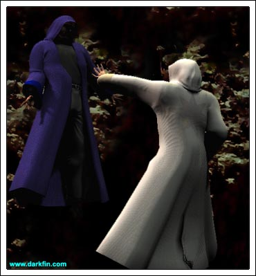
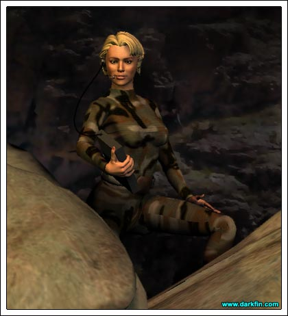
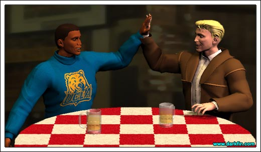
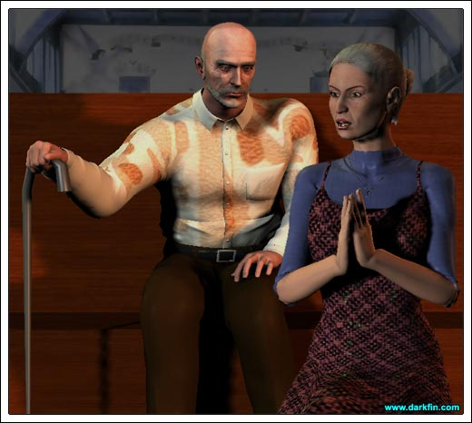
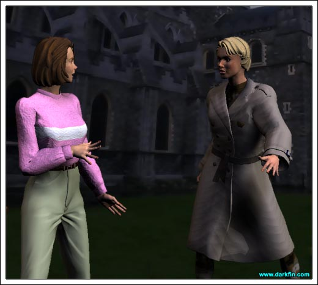

White Robe All is going well?
Blue Robe Mostly... we were able to confiscate everything from the anointed one but I still do not understand why we simply cannot eliminate her and the aberration at her side?
White Robe We need them - we need all of our enemies in play
Blue Robe Why? - you have failed to explain your reasoning to us
White Robe (Levitating the one in blue) FAILED?

Blue Robe I APOLOGIZE - A MISFORTUNATE CHOICE OF WORDS
White Robe (Dropping him to the ground) Choose your words more wisely - at the appropriate time, the others will know of my strategy... until then, it is not for them OR for YOU to question
Blue Robe (Bowing) Of course
White Robe Select two subordinates and bring them to me - I have a mission for them
Blue Robe Scouting or conversion?
White Robe Neither
White Robe Go... NOW
Joenne (To herself) This is going to be interesting

Joenne (Following them) Sorry, sis, I have better things to do
Justine I'm sorry, I know most of you are sci-fi fans but that was the LAMEST movie I ever had the misfortune of seeing
Morrigan I hate to admit it, but I agree
Gracie (Crunching on her crust) That wasn't REAL sci-fi, that was Hollywood's crap version with a bunch of special effects passing off as a story
Zach Not to mention a star vehicle for their latest "IT' girl... oops, I meant "TIT" girl
Jason (Smirking) But, it was kind of cool when she used her boobs as weapons

KJ (Giving him a high-five) THAT WAS SWEET
Zach Well worth the price of admission!
Gracie Someday, hopefully, a solid sci-fi writer will get the chance to tell their tale on the big screen
Morrigan Do you ever think "Sigma Seven" will make it?
Zach (Hoisting his beer) Here's hoping!
Gracie If anyone could write it, Jess could
Morrigan Who's Jess?
Justine Warning, boring topic of conversation ahead!
Zach Jessie Escobar is the creator and head writer for Sig7 but she's being slowly muscled out by Martel and his goons
Gracie God forbid anyone with real talent be allowed to flourish in this country
Jason That's not true - a lot of struggling athletes have made their dreams come true
Gracie Yeah, JOCKS, not artists!
Justine (Inspecting at a dirty knife) Yet another boring topic of conversation - shouldn't there be a limit?
Zach Before we leave the last one entirely, I found an EXCELLENT chat group devoted to Ursula/Bogree slash fic - Grace, we need to link it to our site!
Gracie (Scrunching up her face) EWW, I HAVEN'T FULLY DIGESTED MY MEAL YET
KJ (Bewildered) Does anyone know what they're talking about?
Morrigan Rarely
Jason Yeah, two more pitchers of beer, please
Zach (Smiling at Morrigan) And another Cherry Coke for the little girl in the pink sweater
KJ (Picking up on Morrigan's mood) Maybe she likes Cherry Coke, man, I prefer Dr. Pepper myself
Zach Morri, if you're a recovering alchie, just say so - it's nothing to be ashamed of
Morrigan (Softly) You know, Zachary, I'm getting real tired of you riding me about not drinking beer, so I think it's about time I tell you why I don't drink beer... when I was nine years old, I was in a car accident with my mother and little brother - my mom was obeying all of the traffic laws, until some drunken asshole in a huge pick-up truck crossed the center lane and barreled right into us - there wasn't even time to react - when I regained consciousness, the only things I could coherently grasp through the searing pain of my shattered leg were my brother's dying moans in the back seat and my mother's decapitated head in my lap - an hour later, after being trapped with a blaring car horn and the radio stuck on Neil Diamond, the firefighters finally freed me with the Jaws of Life and wheeled my broken body into the back of the ambulance - on the way, the very last thing I saw were two twisted piles of metal sitting in a large pool of blood and gasoline with empty Coors cans floating in it - so, no, I really do not like drinking beer - I have nothing against others enjoying themselves responsibly - but, for me, I suppose you could say, it has left a very bad taste in my mouth
Zach WHO'S UP FOR A GAME OF POOL?
Jason, Justine, and Zach all jump up from the table and dash off. KJ follows them but kisses Morrigan on the cheek first. It is now just her and Gracie with the pizza.
Gracie I could say "sorry" but I know that doesn't even come close
Morrigan No worries - how come you stayed?
Gracie (Grabbing another slice) Are you kidding? - I mean, I'm sorry for the suffering and all but THANK YOU for clearing the table!
Morrigan It was a bit crowded, wasn't it?
Gracie I seriously had no idea Justine and Jason were going to tag along
Morrigan I'm a little surprised that Justine bolted like she did
Gracie Well, she lives stories like that everyday with her job - besides, the pool table is where the men are!
Morrigan Very true
Gracie Speaking of men, what's up with you and KJ? - have you two done it yet?
Morrigan None of your business!
Gracie Dear God, please don't let there be some horrific story that has scarred you sexually for life!
Morrigan It's nothing like that... it's just - I dunno
Gracie Is there someone else?
Morrigan (Defensive) NO, of course not - something's missing in our relationship, that's all
Gracie (Making a crude hand gesture) That's pretty obvious
Morrigan More than that
Gracie What do you mean?
Morrigan (Taking her beverage from the waitress) I don't know
Gracie You need to be a little more specific
Morrigan Honestly, I don't know and it's frustrating the hell out of me
Gracie Not to mention poor Kage
Morrigan He's everything I've ever wanted in a man - handsome, rich, sweet - in all of my previous relationships, I was always the one doing the romancing, tending to THEIR needs - I used to say to myself that I would become a slave to the first man who bought me flowers or chocolate without having to fucking beg for it... and don't even get me started on "The Hope for Poetry"
Gracie (Chuckling) I hear ya!
Morrigan (Sipping her soda) And now KJ has given me all of that
Gracie (Nearly choking on her beer) HE WROTE YOU POETRY?
Morrigan Actually, it was a Hallmark card... that counts
Gracie Five points
Morrigan He signed the card "Love, Your Rockin' Lawyer Dude"
Gracie Three points off
Morrigan Four - anyway, he's just not "deep" enough for me
Gracie Funny, he is the one guy that I know who would be just as comfortable making 50K a year as he does making 500, so what if he's a little dim or a little shallow?
Morrigan He is actually very smart but he's too casual about life... and girlfriends
Gracie Mmm, NOW we're getting closer to the truth
Morrigan Not to mention, Mrs. Javier Sanchez
Gracie Don't worry, I'm sure that little obsession will pass
Morrigan As will his obsession with me
Gracie Why do you see it as that?
Morrigan Because it is - I'm something new, a little different - he'll get tired and return to his bimbos soon enough
Gracie Jeez, give him a chance, first
Morrigan It's really hard - when we're out to dinner, I wonder to myself, has he brought all of the others to this place as well? - when we listen to a certain song, will that be OUR song or is it a song he was banging some girl to last summer? - these questions are always in the back of my mind
Gracie Sounds like insecurity
Morrigan Maybe, but I choose to see it more as "pride" - pride in knowing that I didn't have to bed half of the state to fall in love with someone who feels exactly the same way about me
Gracie But you're missing out on a lot of good times
Morrigan See, that's where our standards differ - I don't trivialize love with lust
Gracie Do your standards keep you warm at night?
Morrigan Of course not - I don't expect them to - unlike most of the population out there, I don't allow my body to dictate my actions - my head and my heart do enough damage
Gracie If it makes you feel any better, I can assure you that you will always be KJ's "Morrigan" - your name is just too weird for him to have had any others... now I, on the other hand, was my ex-husband's "Gracie #3" - can you believe that? - I never knew when he was screaming out my name during sex if it was me, his sophomore year blonde Gracie or the trannie named "Amazin' Grace" he picked up on a street corner in Miami... now, there's a case for insecurity!
Morrigan (Rubbing her head) Dear Lord!
Gracie (Looking at her watch) WOW, we've been together all night and you haven't tried to duck out once
Morrigan I'm sorry for being so anti-social lately, I have a lot of things to research
Gracie (Suspicious) Like Darkfin?
Morrigan No - I'm digging something up, literally, on the Pacific Coast Oil Cartel
Gracie WHAT?
Morrigan The story is far from ready and I can't trust Zach with it yet, if he goes to print... it will screw up the timing
Gracie Why can't you let me in on this? - we work for the same team, maybe I can help you?
Morrigan I know and when it's time, I'll need you there... but not yet
Morrigan You've got to trust me on this, Takanachi... PLEASE
Gracie Fine - but, if I were you, I wouldn't be sitting here...
Gracie I'd be PUMPING my prime PCOC source
Morrigan Not a bad idea
Morrigan (Answering it) Hello?
Hector Hola, Senorita McBride - this is Hector Tapia returning your call from earlier?
Morrigan Ah, Hector - thank you so much
Hector You wanted to find out some details about the Chumash burial grounds in the Kiyomis?
Morrigan Yes, I was hoping you could help me out with that?
Hector I know a little bit but I also know someone who would be more of a help to you
Morrigan GREAT - where can I meet this person?
Hector Come to your church, pronto!
Morrigan St. B's?
Hector My sister, Carmen, is here on behalf of Our Lady of Guadalupe - inter-parish business and such - anyway, she knows everything and would be the perfect source for you
Morrigan Perfect - I'll be there in 10 minutes... muchas gracias, Hector!
Hector Always at your service!
Gracie Now where are you off to?
Morrigan Church
Gracie With Hector Tapia? - yeah, right!
Morrigan (Dashing off) Please say goodnight to the others for me
Frank (Arms folded) I don't know why you dragged me here - I should be home, watching wrestling with my grandchildren
Carmen Ona Rosa took them to see that new sci-fi movie
Frank I should be home helping Anita fix the barn
Carmen She is playing at a club tonight
Frank I should be...
Carmen A supportive husband
Frank Argh
Carmen Do I make the slightest complaint when you and your buddies bring home dead animal carcasses for me to clean?

Hector Carmie - I hope you don't mind, but I invited a friend to join us later
Carmen A lady friend, hermano?
Frank (Struggling with his coffee) What other kind would there be?
Hector It's Morrigan McBride and she needs your help with a story she's doing
Frank (Eyes lighting up) That KCON girl who saved the dog - I LIKE her!
Carmen (In a huff) Anita talks about her all the time as if she were the harbinger of doom
Hector That's because she has failed to succumb to your daughter's charms
Carmen (Covering her ears) NOT HERE, NOT IN CHURCH
Frank AW, CHRIST
Frank Amen
Carmen What does this McBride want to know, Hector?
Hector About the Chumash... particularly the burial grounds in the Kiyomis
Hector (Noticing) Is everything alright?
Carmen (Looking away) Both of you need to be quiet... Padre Juan is about to bring up Guadalupe concerns
Morrigan (Assuming it's Darkfin) You know, Bouillabaisse, you have got to come up with a better way of contacting me
Morrigan (Startled) JOENNE... Justine's sister, right? - we met that day outside the morgue

Morrigan I'm sorry - are you on your way to the meeting? - please don't let me keep you
Morrigan (Nervous) Are... are you alright?
Joenne No... and neither are you
Morrigan What?
Joenne If you value your life... do NOT go inside!